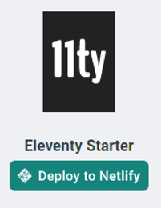
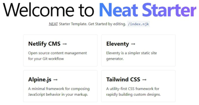
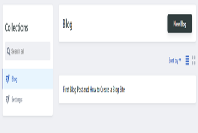
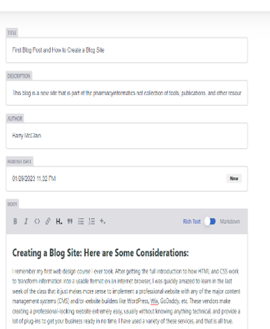

Creating a Blog Site: Here are Some Considerations:
I remember my first web design course I ever took. After getting the full introduction to how HTML and CSS work to transform information into a usable format on an internet browser, I was quickly amazed to learn in the last week of the class that it just makes more sense to implement a professional website with any of the major content management systems (CMS) and/or website builders like WordPress, Wix, GoDaddy, etc. These vendors make creating a professional-looking website extremely easy, usually without knowing anything technical, and provide a lot of plug-ins to get your business ready in no time. I have used a variety of these services, and that is all true.
Despite all of that, I have elected to keep close to my developer roots and have built pharmacyinformatics.net and .blog using a regular code editor, pushing my changes to Github, and deploying the Github repositories using Netlify. You can have a website available on the internet within a minute using that setup. Although it does take more technical expertise/comfort to implement your own high-quality website, I will say there are a lot of templates and examples available on the world wide web. In addition to efficiency, another reason I also like building my own sites and hosting them on Netlify is because it is much more economical than using the other “out-of-the-box” solutions. In fact, it is pretty much free to deploy a website unless you are upgrading the domain name or using some heavy-duty/ features. Lastly, I love the flexibility there is in organic development. As I have learned more front-end and back-end concepts, I tend to come up with even more awesome ideas and solutions when I fully understand how it is working and can control the design. I might have also been up late at night fretting over getting past a single error or issue. Very frustrating.
So that was a lot of introduction to get to how the blog is setup. I am using Netlify CMS to provide the content management systems, and I used the 11ty starter option to build the site to integrate into pharmacyinformatics.net.

The deployment was very simple. Click the deploy button and it was really live on the internet in a minute. The template did take me a bit of time to get familiar since the 11ty configuration was new to me, but I was able to customize it for my needs after some tinkering. The author of the template, Surjith S M, has his own blog on the set-up and features of the template, which was helpful.

The real benefit of using the Netlify CMS was pretty clear once I was in there. The set-up allows for continuous deployment directly through Github by just logging into your site using /admin at the end of the domain (as seen in my code block) and writing the blog entry I am doing right now!
www.example.com/admin/

